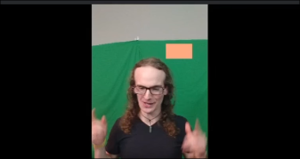
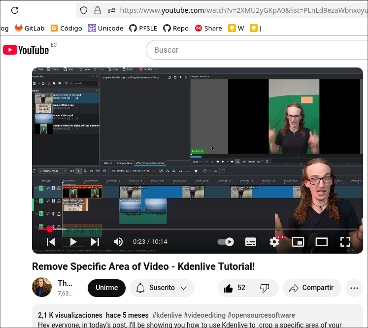

En este tutorial, aprenderás a eliminar o modificar un elemento dentro de un video en Kdenlive basado en su posición, sin depender únicamente del color.
El efecto “Crop, Scale and Tilt” se encuentra en:
Transformación, distorsión y perspectiva > Crop, Scale and Tilt
👉 Esto es útil para eliminar bordes, pero no sirve para recortar un objeto en el centro del video.
Para eliminar un color específico (como una pantalla verde): 
❗ Problema: Si intentamos eliminar un color similar al de la piel, puede afectar otras partes del video.
1️⃣ Chroma
El término Chroma se refiere al color en un
video o imagen.
2️⃣ Chroma Key (Clave de Croma)
Es una técnica de edición de video que permite eliminar un color
específico de una imagen o video y reemplazarlo con otro
fondo.
El proceso consiste en:
1. Grabar el video con un fondo de color sólido,
generalmente verde o azul.
2. Usar un efecto de Chroma Key en un software de
edición (como Kdenlive, Premiere Pro o After Effects).
3. Eliminar el color seleccionado y reemplazarlo con
otro video, imagen o fondo.
✅ Noticias y meteorología – Donde el presentador
está frente a un mapa virtual.
✅ Efectos de cine – Para crear escenas con mundos
ficticios.
✅ Streaming y videojuegos – Para eliminar el fondo y
mostrar solo al jugador.
📌 Dato clave: Se usa verde o azul porque estos colores contrastan con el tono de piel y la ropa de la mayoría de las personas.
Si necesitas eliminar un objeto sin depender del color:
"Write on" a "Subtract".✔ Esto elimina todo dentro de la forma, sin importar el color.
Para cambiar el color o la saturación de una parte específica del video:
💡 Esto permite modificar solo el área seleccionada, sin afectar el resto del video.
Este método es útil para: ✅ Eliminar objetos no deseados. ✅ Modificar colores y efectos en zonas específicas. ✅ Crear efectos visuales avanzados sin depender del croma.
Remove Specific Area of Video - Kdenlive
Tutorial!
https://www.youtube.com/watch?v=2XMU2yGKpA0&list=PLnLd9ezaWbnxoyuP73TTRLaE9Cr3QwLRz&index=13

croma
https://dle.rae.es/croma?utm_source=chatgpt.com
¿Qué es el croma?
https://www.adobe.com/es/creativecloud/video/discover/what-is-chroma-key.html
Croma
https://es.wikipedia.org/wiki/Croma
Croma Key ¿Qué es y para qué sirve?
https://www.monsuton.com/croma-key/